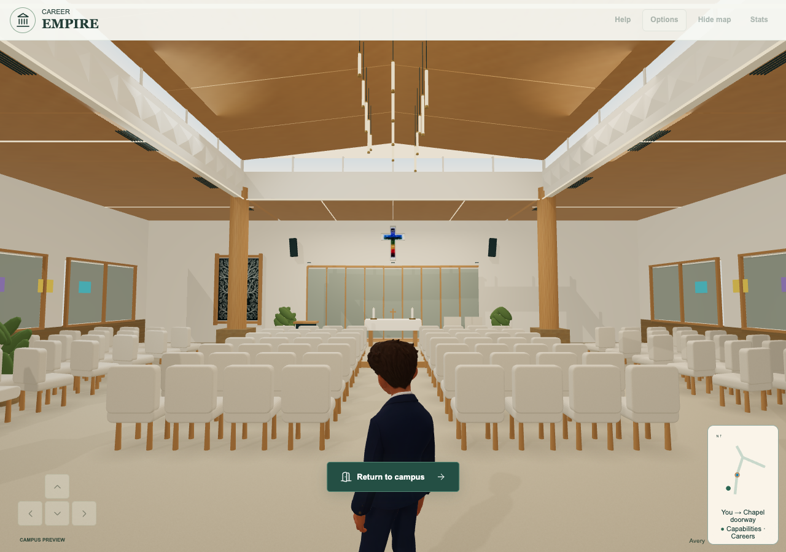
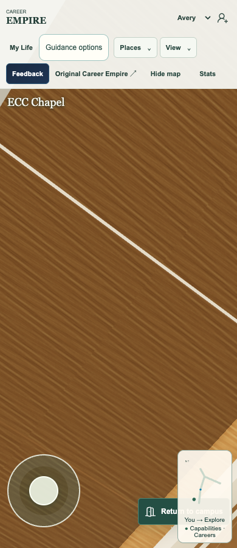

Published and verified
Chapel walk-in 1733b4b5e1447e9877e9abb972b816bf1d4102cc is published at the actual Career Empire game. All353 actual runtime asset hashes match. Live native Chrome first-day physical walking through the doorway, upward ceiling scan, mouse return/checkpoint/reentry at1280 and automated touch joystick/yaw/ceiling/two exits/reentries/cancel/keyboard exit at390 pass. Actual unmodified published Market/map hide-show, classroom entry, Notes reading/feedback/written responses, Journal contextual return, Archon lobby and same-run checks pass at1280/390; guest Notes makes zero Storage API/backend requests. Source387 tests/82 files,353 staged assets/106 imports,10 focused and5 integrated native cases pass. Read-only live pose/frame observers document actual game physics and renders; no teleport or gameplay replacement. Separate CI f156c32 restored staged only. Broad CI admin-preview failure remains; no all-CI-green, Safari, physical-device, classroom or whole-campus appearance acceptance. Tania can now check the live game and record the Chapel walkthrough. EST, portfolio and Flyover remain separate successors.
Actual live gameBlueprint readerChapel: walk in, look around, return
Request, ownership and prior delay
Tania requested walking through the Chapel doorway without an Enter Chapel click, looking upward and around inside, and retaining click-to-exit. Her13November Perth follow-up asks why it is not live so she can record the courtyard walkthrough. The executing integrator independently read both authenticated requests. The delay was an unfinished serial release: the eight-file qualified candidate was based on69aa78e and remained queued while Archon and Notes were published. This task merges it onto actual current250c409, verifies it and uses the unchanged source-review/receipt/push process. Physical-device certification and ceiling visual perfection are not newly invented indefinite release gates.
Bounded integration
Clean three-way merge retains every current Archon/Notes behavior. The eight source files contain the doorway helper, main movement/camera integration, nonblocking discovery guidance, entry cache tags, runtime manifest and two existing test-fixture regressions. The Market Notes cache/import chain remains unchanged. Native keyboard/joystick walking must cross the real narrow inward doorway; standing nearby, wrong key or clicking the old prompt does not substitute. A shared pending promise prevents duplicate preparation; failed loading can retry after stepping back, and intervening navigation prevents a late transition. Return places the player outside and rearms only after moving clear.
Interior camera and exit
Horizontal scanning remains available; vertical drag uses bounded tilt and a perspective look-height calculation so the ceiling is inspectable without moving the camera through the roof. Camera/body bounds are preserved. Return to campus remains a visible native control throughout the Chapel; completed primary touch activates once even if a browser omits its synthesized click, clears held movement, consumes a later matching touch click and preserves keyboard/mouse activation. Drag-off, cancellation, wrong pointer and disabled/hidden controls do not activate. First-day guidance no longer automatically opens the old Chapel proximity modal while walking; explicit help/checkpoint behavior remains.
Exact current-base checks
387 unit tests across82 files pass with original limits;353 staged runtime hashes and106 reachable imports pass, as do10 focused doorway/load/race/touch regressions. Five integrated native-Metal Chrome cases pass: desktop/phone camera bounds; actual first-day walking through the doorway, upward look, mouse exit/checkpoint and reentry at1280/390;390 automated touch joystick movement, more than a full horizontal turn, ceiling gesture, two real touch exits/reentries, zeroed held input, drag-off cancellation and Enter-key exit. Tests use normal guest routes, real physics displacement and real pointer/keyboard/CDP touch events. Read-only test observers expose pose/frame evidence; they do not teleport or alter gameplay. Native rendered-frame counters and screenshots establish the draw after looking up; software-only presentation counters are not misreported as native evidence.
Retakes and limits
Initial imported test setup used a generic local HTTP server that reset parallel module downloads. The existing repository128-request-queue/range server was then used. A readiness race clicked destinations before startup; the harness now waits for actual entryReady. A cloud assertion waited for a software-only presented-frame attribute on native rendering; the check now uses the native rendered-frame count and pose-at-draw while preserving actual draw/interaction assertions. Failed structured runs and fresh final output paths are retained; an aborted early retake reused some screenshot paths, so not every initial screenshot remains. No production change or assertion threshold reduction was used to disguise these harness issues. Final native ceiling/interior captures are visible, unlike earlier near-black unchanged-baseline SwiftShader evidence. Physical device, Safari, final architectural appearance acceptance and Tania’s recording remain separate.
Preserved integration and release scope
Current Notes250c409 and readable Archon remain integrated; their game commands, shared curriculum library, draft/privacy behavior, artwork and hosted service are unchanged. Separate CI f156c32 is safely parked for this release and must be restored/staged alone afterwards. Queued EST, portfolio and Flyover candidates remain separate successors, not old-file overwrites. Source review is qualified; game publication is pending the genuine covered receipt and normal push. Approved, tested, live and accepted remain distinct. Broader CI has known admin-preview/legacy-avatar failures; no all-CI-green or school-readiness claim is made.
Impact and evidence boundary
This is local movement, camera, interaction and optional guidance only. No new data field, account, provider, learner storage key, telemetry, backend, security setting, model or asset production. Existing Chapel identity, progression checkpoint and protected decisions remain. No source textbook/student material is added. Automated phone-width/touch evidence is not an assertion about an unspecified physical device. The user will record the walkthrough after independently verified live publication.
Native rendered candidate

Actual live1733b4b native render. User appearance/recording acceptance remains separate.
Actual live1733b4b native render. User appearance/recording acceptance remains separate.Exact source files
playable-3d/app.js 100644:733aba8b409fd7e62f7aac88c857d03863eb3ff8
playable-3d/chapel-entry.mjs 100644:0b45967eeb691be5889566a959d37460d2ababfb
playable-3d/discovery-opening.js 100644:2ce06a571e2637ffe3549c3bb7b4f19989355f4b
playable-3d/guest-shell.mjs 100644:c096d5d63f71853455c70a9593cdd51ed68323b8
playable-3d/index.html 100644:5c9d229e2f067d759289f58d5fe1475731830707
playable-3d/release-manifest.json 100644:b5271e0b7660658145307dddbc6ce9ee232eedd4
tests/unit/software-navigation.test.mjs 100644:d4530880f1c85bf3f653f5e1129d0a3179f0c2a8
tests/unit/world-interaction-priority.test.mjs 100644:e3d0c918f408e3b6f47bcddf4607c2e6a93d88f7